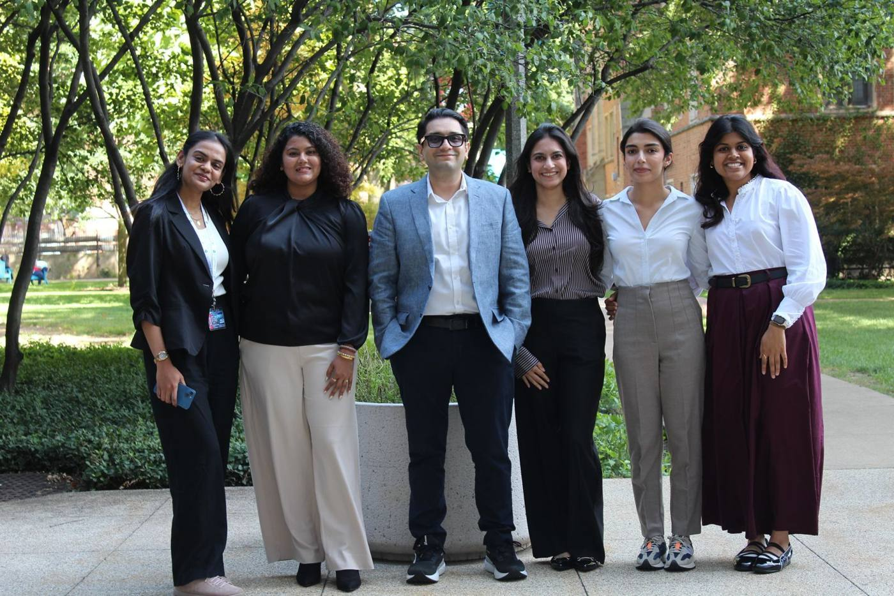

Sustained topical delivery
DECON, our drug-encapsulated carbon platform, holds corticosteroids and antivirals on the ocular surface and releases them over days, so a single dose can replace many eye drops.
Read moreWe engineer sustained-release and minimally invasive delivery systems for the eye, and we use machine learning on the host response to identify the pathogens behind ocular infection. Our goal is fewer drops, fewer injections and better outcomes for patients.

Each program pairs a delivery problem with a disease the eye clinic sees every day, from herpetic keratitis to post-surgical inflammation.
DECON, our drug-encapsulated carbon platform, holds corticosteroids and antivirals on the ocular surface and releases them over days, so a single dose can replace many eye drops.
Read moreO-GPT is a dissolvable microneedle film that places drug directly into the corneal stroma, improving compliance and cutting the burden of frequent dosing.
Read morePLGA microspheres, thin films and electrospun fibers deliver antivirals, antibiotics and steroids for weeks, targeting herpetic uveitis and post-surgical complications.
Read moreWe train machine learning models on the host's transcriptional response to infection to identify whether a viral, fungal or bacterial pathogen is to blame, even when too little pathogen is present to detect directly.
Read more
Assistant Professor of Ophthalmology and Visual Sciences at the University of Illinois Chicago. Trained as a nanomaterials engineer and an ocular virologist, Teja builds delivery systems with the disease biology in mind.
We welcome postdocs, graduate students, rotation students and motivated undergraduates who want to work at the boundary of engineering and eye biology.
Opportunities in the lab